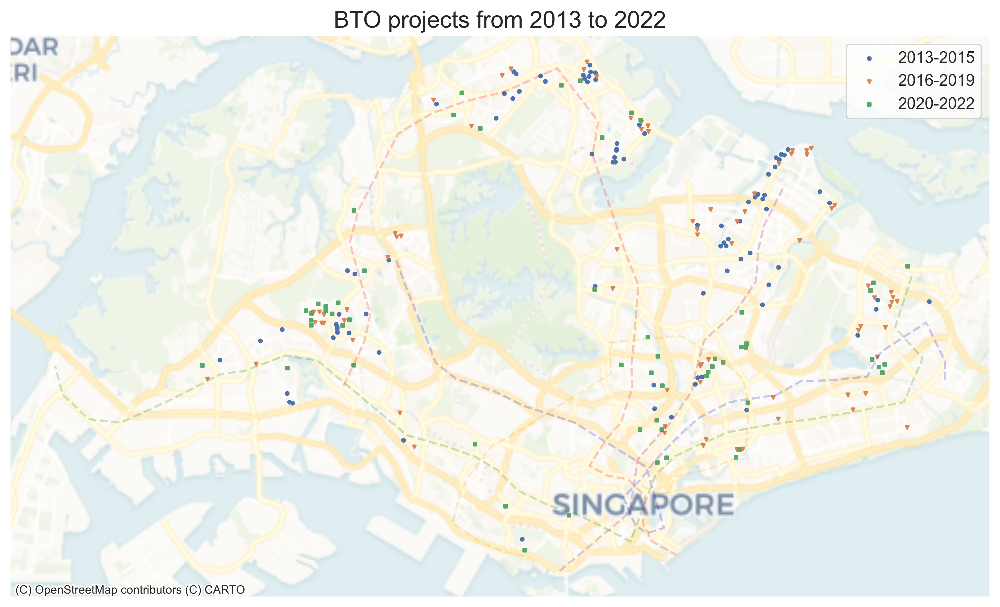

Public housing at scale: Demand and welfare
Kwok-Hao Lee* (NUS), Andrew Ferdowsian (Notre Dame), Yiying Tan (Princeton), Luther Yap (Princeton)
Opinions expressed herewith do not represent the views of NUS or HDB.
Created: 2024-06-11 Tue 14:07
1. Introduction
1.1. Motivation
- (Un)Affordable housing
- SF: Housing accounts for 42% of a household’s budget
- HK: 220k people live in shoebox apartments (4’ x 6’)
- SG: Median private home price — US$1.2 million
- “Too bad?”
- Motivates government intervention at scale
1.2. When governments provide public housing…
- People wait years…
- while passing on acceptable but less desirable goods
- We have prescriptions for waitlist design for the poor (Waldinger 2021)…
- But what about lotteries
- at scale (80% of residents in Singapore, 1 million apartments)
- and how do intertemporal tradeoffs matter?
1.3. Some countries with housing lotteries

1.4. In the Singapore program…
- To encourage homeownership
- the government builds (public) housing
- sold below market prices
- differentiated by location and apartment size
- possibly resold on a regulated aftermarket
- rationed by quarterly lottery over each applicant’s top choice
1.5. Research question
What are the efficiency and distributional effects of at-scale public housing provision?
- “… we manage the building programme carefully, including allocating new flats in a fair, cost-effective and efficient way.” (Mah 2011, 29)
- Evaluate welfare, wait times, housing affordability, and access to amenities across subpopulations
- (Sequel) Changing allocation rules vs. increased supply
1.6. Agenda
- Introduce the setting and provide descriptive analysis
- Build dynamic choice model over lotteries for (new) public housing
- Estimate on applicant microdata from the Singaporean mechanism
- Recover preferences for young households & owner-occupiers
- Euler CCP methods drastically simplify estimation
- Key challenges: Observables highly predict prices of new builds + Endogenous lottery odds
- Solution: RD at subsidy cutoff + Differentiation IV (Gandhi and Houde 2020)
- (Eventually) Evaluate welfare, disparate impacts; solve planner’s problem
1.7. Literature review
- Dynamic assignment mechanisms: Budish and Cantillon (2012); Agarwal and
Somaini (2018); Arnosti and Shi (2019); Agarwal et al (2020); Verdier and
Reeling (2021); Waldinger (2021); Naik and Thakral (2021); Shi and Yin (2022);
Altmann (2023)
- Public housing + secondary market + dynamics
- “Effectiveness of \( \uparrow \) supply” (e.g., Bulow and Klemperer 1996) depends on the rules
- Neighborhood choice: Bayer, Ferreira and McMillan (2007); Galiani, Murphy
and Pantano (2015); Bayer et al (2016); Fu and Gregory (2019); Epple, Quintero
and Sieg (2020); Davis, Gregory and Hartley (2021); van Dijk (2020); Sieg and
Yoon (2020); Calder-Wang (2022); Almagro and Dominiguez-Iino (2022); Cook, Li,
and Binder (2023); Soltas (2023); Zhou (2023)
- Centralized mechanism + at-scale public housing + dynamics
- (Dynamic) Demand estimation: Rust (1987); Berry (1994); Berry, Levinsohn,
and Pakes (1995); Gowrisankaran and Rysman (2012, 2020); Gillingham et al
(2022); etc.
- Primary market clears by lottery and wait times
- Estimation leverages finite dependence (e.g., Arcidiacono and Miller 2011, 2020)
2. Setting
2.1. The Singaporean housing market

2.2. Historical context
80% of Singaporean households live in government housing
- 2021: 1.1m apartments, est. value S$440b
Build-to-order (BTO) mechanism, new government apartments (2001-today)
- S$6.3b/year (US$4.7b/year)
- Administered by the Housing and Development Board (HDB, 1960-today)
- “Sells” 99-year leases to households assigned new apartments
- Intermediates resale on (after)market
Government objective: Provide “affordable, quality public housing option”
- Encourage homeownership
- “Affordable”: \( \leq \) 4x applicant yearly income
- Minimize vacancies
- … and other objectives
2.3. Eligibility for the mechanism
Applicants apply for BTO as a family unit (typically a married couple)
- One must be a Singapore citizen; the other a citizen/PR
- Both aged \( \geq \) 21 years
- Do not own real estate in Singapore or overseas
- Income \( \leq \) S$144,000 a year (60th percentile)
Priority: Focus on “first-timers.”
- 95% of apartments in desirable neighborhoods reserved for them
2.4. Pricing

Applicable for 3- to 5-room flats (2-3 bedroom units)
2.5. Historical context (comparison)
| Characteristic/Settings | “Singapore” (+ Israel, Brazil, …) | Waitlists |
|---|---|---|
| Lease type | Owner-occupation | Rental |
| Lease tenure | \( \geq \) 99 years | 1-2 years (renewable) |
| Lease transferable? | Yes, after min term (SGP: 5 yrs) | No |
| Applicant wealth | Low to moderate | Low |
| Transfer type | Income-specific subsidy + | Direct rent control/ |
| Discount from “resale price” | Voucher | |
| Allocation mechanism | Centralized assignment, lottery | Waitlist |
| Application cycles | Periodic (SGP: Quarterly) | Continuous (FIFO) |
| # Choices per app | 1 | > 1 |
3. Data and Descriptive Facts
3.1. Data: The universe of public housing transactions
- Mechanism: Government microdata, 1.1 million applications (2013-2023)
- Who applied to what; demographics; when they buy a used flat
- Secondary market (data.gov.sg): 610k transactions (2000-2023)
- Month/year transacted, location, price, year built
3.2. Location of BTO developments

3.3. Time trends in oversubscription

3.4. Oversubscription and vacancies

4. Model: Outline of Public Housing Market
- New apartment supply exogenous;
- Owner-occupiers sell or not;
- Applicants enter one lottery, apply to clearinghouse, wait, or exit
4.1. Dynamic equilibrium model of housing choice
Every period, new housing developments arrive exogenously.
Owner-occupiers
- Infinite horizon, two-period-ahead foresight through 2023
- Know price path next period; form beliefs over values period after
- Given the prices they face, either
- Sell off their apartment (terminal); or
- Continue living in it
- Key trade-off: Sell today vs. sell at higher price tomorrow
4.2. Applicants
- Infinite horizon, two-period-ahead foresight
- Differ by income, family structure, …
- Know projects arriving next period; form beliefs over values after
- Given prefs, prices and odds of success over developments, either
- Apply for one project within the mechanism;
- Apply to one region in the clearinghouse;
- Buy a “used” apartment in some region; or
- Wait (live with family).
- Key trade-off: Success odds vs. desirability
Markets clear via lottery odds (1\(^{\circ} \)) and prices (2\(^{\circ} \))
5. Model: Details
5.1. Model — Beliefs
Owner-occupiers and applicants have limited foresight. Beliefs @ \( t \):
| t | \( \hat V \)? | \(\widehat{\text{Applicant mix}}\)? | Know project mix? | \( \widehat{P(S)} \)? |
|---|---|---|---|---|
| \( t+2 \) | \( V^t_{t+2} = V^t\) | \( \mu_t \) | No | \( P^t_{t+2}(S) \) |
| \( t+1 \) | \( V^t_{t+1} \) | \( \mu_t \) | Yes | \( P_{t+1}(S) \) |
| \( t \) | \( V^t_t \) | \( \mu_t \) | Yes | \( P_t(S) \) |
Assume beliefs are updated as \[ V^t = \frac{V^t_t + \delta V^t_{t+1}}{1+\delta} \] (and similarly for resale prices)
5.2. Used apartments: Notation
Every quarter \( t \): owner-occupier \( i \) decides whether to sell off her apartment
- Action 1/0: To sell/not
- \( a \): type (location) of the used apartment
- \( P_t(S; a) \): market price of apartments of type \( a \)
- \( V^t_{it}[S; a, P(S; a)] \): Believed value of owning type \( a \) apartment
- Abusing algebra, suppress dependence on price path \( P(S; a) \)
5.3. Used apartments: Indirect utilities
Every quarter \( t \): owner-occupier \( i \) decides whether to sell off her apartment
- Indirect utility from selling is \[ w_{it}(1; a) = \rho P_t(S; a) + \xi_{t}(1, S; a) + \epsilon_{it}(1, S; a) \]
- Indirect utility from staying is \[ w_{it}(0; a) = \delta(S) \mathbb{E}[V^t_{it+1}(S; a)] + \xi_{t}(0, S; a) + \epsilon_{it}(0, S; a) \]
5.4. Used apartment: Choice probabilities and Supply
- Conditional choice probability of type \( a \) to sell at time \( t \): \[ p_{t}(1; a, P(S)) = \frac{\exp[w_t(1; a, P(S))]}{\exp[w_t(0; a, P(S))] + \exp[w_t(1; a, P(S))]} \]
- In region \( l \), supply of secondary market housing at time \( t\) is \[ \mathbb{S}_t( l, P(S)) = \int_{a \in l} p_{t}(1; a, P(S)) \, d\lambda_t(a), \] where \( \lambda_t(a) \) is the housing stock of type \( a \) apartments at time \( t \).
5.5. Model — Demand (Preferences)
Specify model backwards.
- Applicant \( i \): 2-tuple \(\omega_i = (\zeta_i, s_i) \), (obs. char., unobs. type.)
- BTO project \( j \): 4-tuple \((l_{jt}, x_{jt}, P_{jt}, \xi_{jt}) \)
- (region, obs. char., price vector by type, unobs. amenities by type)
- \( L_{jt} \): 5-vector of regions, with entries \( \mathbb{1}\{ l_{jt} = l \}\)
- Probability of success at \( j \): \( r_{jt}(\omega) \)
- Clearinghouse option \((C, l)\): region \( l \), price vector \( P_t(C, l;
\omega) \)
- Probability of success: \( r_{t}(C, l; \omega) \)
- Exit option \((E, l)\): region \( l \), price vector \( P_t(E, l; \omega) \)
5.6. Flow payoffs (1)
If applicant \( i \) of type \( \omega \) remains unmatched, her flow utility is \[ u_t(0; \omega) = \xi_t(W; \omega) + \delta V^t_{t+1}(\omega). \]
Else her terminal utilities from success are:
- Apartment in BTO project \( j \): \[ u_t(j; \omega) =
L_{jt}'\color{blue}{\phi(\omega)} + x_{jt}'\color{blue}{\beta(\omega)} -
\color{blue}{\alpha(\omega)} P_{jt}(\omega) + \xi_{t}(j; \omega) \]
- \( \phi(\omega) \): Governs preference for project \( j \) being in \( i \)’s preferred region(s)
- \( \beta(\omega) \): Governs preferences over other observables of project \( j \)
- \( \alpha(\omega) \): Governs preferences over apartment price
5.7. Flow payoffs (2)
- Apartment in BTO project \( j \): \[ u_t(j; \omega) = L_{jt}'\phi(\omega) + x_{jt}'\beta(\omega) - \alpha(\omega) P_{jt}(\omega) + \xi_{t}(j; \omega) \]
- Apartment on clearinghouse in region \( l \): \[ u_t(C, l; \omega) = L(C, l)'\phi(\omega) - \alpha(\omega) P_{t}(C, l; \omega) + \xi_{t}(C, l; \omega) \]
- Apartment on secondary market in region \( l \): \[ u_t(E, l; \omega) = L(E, l)'\phi(\omega) - \alpha(\omega) P_t(E, l; \omega) \]
5.8. Choice-specific value functions
- BTO apartment \( j \): \[ v_{it}(j; \omega) = r_{t}(j; \omega) u_t(j; \omega) + [1-r_{t}(j; \omega)] u_t(0; \omega) + \epsilon_{it}(j; \omega) \]
- Clearinghouse, region \( l \): \[ v_{it}(C, l; \omega) = r_{t}(C, l; \omega) u_t(C, l; \omega) + [1-r_{t}(C, l; \omega)] u_t(0; \omega) + \epsilon_{it}(C, l; \omega) \]
- Apartment on secondary market, region \( l \): \[ v_{it}(E, l; \omega) = u_t(E, l; \omega) + \epsilon_{it}(E, l; \omega) \]
- Wait one period: \[ v_{it}(W; \omega) = u_t(0; \omega) + \epsilon_{it}(W; \omega). \]
5.9. Household decision problem
- If unmatched, decides optimally: \[ V^t_t(\omega) = \mathbb{E}\left\{\max_{d \in \mathcal{J}_t \cup \mathcal{C}_t \cup \mathcal{E}_t \cup \{ W\}} \mathbb{E}_t[v_{it}(d; \omega)] \right\} \]
- Possible actions:
- \( d \in \mathcal{J}_t \): apply to BTO project \( d \)
- \( d \in \mathcal{C}_t \): apply to clearinghouse, region \( d \)
- \( d \in \mathcal{E}_t \): take used apartment, region \( d \)
- \( d = W \): wait one period
5.10. Market shares
- Type-specific market share of BTO project \( j \) at time \( t \): \[ p_{t}(j; \omega) = \frac{\exp(\bar v_{t}(j; \omega))}{\sum_{l \in \mathcal{L}}[\exp(\bar v_{t}(C, l; \omega)) + \exp(\bar v_{t}(E, l; \omega))] + \exp(\bar v_{t}(W; \omega)) + \sum_{k \in \mathcal{J}_t} \exp(\bar v_{t}(k; \omega))} \]
5.11. Model — Equilibrium
In equilibrium,
- [Applicants apply/wait/exit optimally]
- [Owner-occupiers sell/remain optimally]
- [Applicant and owner-occupier beliefs are consistent]
- [Success probabilities in the mechanism are consistent]
- [Sequence of secondary market prices sets demand equal to supply]
6. Estimation: Outline
6.1. Where we are headed
Want to recover…
- young household preferences and flow wait utilities (demand) and
- how likely existing homeowners move when home prices rise (supply).
6.2. Demand estimation: Brief
Demand: Type-by-type, again exploit finite dependence (Arcidiacono and Miller 2011)
- Identification: Variation in menus + characteristics of developments
- Price coefficient: RD around subsidy cutoffs
- Procedure: Classify applicants + Estimate CCPs + “Cancel value functions” + Recover observable coefs + Recover residuals
7. Estimation: Details
7.1. Demand estimation: Outline
Demand estimation combines techniques from labor and IO.
- Perform data-driven estimation of latent demand types (k-means; e.g., Bonhomme, Lamadon, and Manresa 2019; 2022). Obtain five applicant “types”
- Form conditional choice probabilities by applicant type
- Recover determinants of applicant utility
- (Offline) Use RD across subsidy cutoffs to get price elasticity of demand
- Use finite dependence (e.g., Arcidiacono and Miller 2011) to “cancel” forward-looking part of utility
- Recover weights on amenities using IV (Hotz and Miller 1993; Berry 1994; Kalouptsidi, Scott, and Souza-Rodrigues 2021)
7.2. Demand estimation: (1) Data-driven estimation of latent demand types
- Challenge
- Rich data on applicant demographics and application history. “Let data speak” to which applicants are similar.
- Solution
- Cluster via k-means (Lloyd 1982).
- Characteristics: Household income, age of main applicant, maximal number of children in sample, modal region of application, length of time from first to last application, discrete characteristic 1 (4 values), discrete characteristic 2 (2 values)
- Use elbow method to assess number of clusters (\(k^{*} = 6 \)).
7.3. Demand estimation: (2) Estimating preferences type-by-type
Once types/CCPs are recovered, applicant preferences are obtained by standard IV techniques. Fix a type \( \omega \) and a time period \( t \); suppress subscripts.
- Take two BTO projects \( j, k \in \mathcal{J}_{t} \).
- Construct the object \[ \frac{1}{1 - r(j)} v(j) = \frac{r(j)}{1-r(j)} u(j) + u(0) \]
- Continuation value only appears in \( u(0) \)
- Take differences between \( j \) and \( k \): \[ \frac{1}{1 - r(j)} \ln p(j) - \frac{1}{1 - r(k)} \ln p(k) = \frac{r(j)}{1-r(j)} u(j) - \frac{r(k)}{1-r(k)} u(k) \]
- Does not depend on continuation value!
7.4. Demand estimation: Recover preferences
\[ \frac{1}{1 - r(j)} \ln p(j) - \frac{1}{1 - r(k)} \ln p(k) = \frac{r(j)}{1-r(j)} u(j) - \frac{r(k)}{1-r(k)} u(k) \]
Estimate parameters by IV regression (Berry 1994)
- Variation: Between projects within period
- Issue 1: Observables explain well prices of new builds
- Use RD across subsidy cutoffs to get price elasticity of demand \( \hat \alpha(\omega) \)
- Issue 2: Endogeneity between \( r(j) \) and \( \xi(j) \)
- Use differentiation IV (Gandhi and Houde 2020)
- Obtain: \( \hat \phi(\omega), \hat \beta(\omega) \)
- SEs: Bayesian bootstrap over applicants (Rubin 1981)
- In each replication, draw weights for each applicant
- Use weighted k-means to redraw clusters
- Use weights in IV regression
7.5. Demand estimation: Recover structural residuals
- Exiting is terminal. For any region \( l \), tomorrow’s value: \[ \color{blue}{\hat V'} = \gamma_{\text{Euler}} + L(E, l)^T \hat \phi - \hat\alpha P'(E, l) - \ln p'(E, l) \]
- Compare waiting and exiting today: \[ \ln p(W) - \ln p(E, l) = \color{blue}{\xi(W)} + \delta \hat V' - L(E, l)^T \hat \phi + \hat \alpha P(E, l) \]
- Solve for \( \hat \xi(W) \).
- Finally, compare applying to \( j \) and exiting: \[ \ln p(j) - \ln p(E, l) = \text{known stuff} + r(j) \color{blue}{\xi(j)} + (1-r(j)) \left[ \hat \xi(W) + \delta \hat{V}' \right] \]
- Solve for \( \hat \xi(j) \).
8. Counterfactuals
8.1. Overview of counterfactuals
Compute welfare and disparate impacts under the current design.
- Planner’s problem: Maximize utilitarian welfare s.t. applicants only matched to developments after they “become active”
Next paper: Compare new rules against supply increase.
- Supply: 10% supply increase in oversubscribed projects
- New rules: Run BTO every 4 months (Ferdowsian, Lee, and Yap 2023)
9. Conclusion
Main takeaways
- Investigate efficiency and distributional impacts of at-scale public housing provision in Singapore
- Estimate price sensitivities using RD and amenity preferences using standard IO techniques
- Next step: Planner’s problem, welfare, wait times, affordability
Future research: Rules vs. supply; Optimal public housing location; Use lottery variation to study outcomes
Thank you! (kwokhao [at] nus [dot] edu [dot] sg)
Research agenda
Design of public housing systems
- Demand and welfare of at-scale public housing (Lee et al 2024); Better rules complement raising supply (Lee et al 2025?); Control over supply mix improves efficiency (Ferdowsian, Lee, and Yap 2024)
- Where should a government locate public housing and transit (Lee and Tan 2024)?
Design of transportation systems
- Consumption amenities matter for how transit expansion affects inequality (Lee and Tan forthcoming, RESTAT)
- Distributional effects of vehicle ownership restrictions (Lee and Tsai 2024)
- Comparing design-based and model-based estimates of the value of rail expansion, using Singaporean administrative microdata (George and Lee 2024)
Design of online marketplaces
- Is Amazon self-preferencing? The value of recommender systems (Lee and Musolff R&R, ECMA)
- Seller multi-homing on platform marketplaces (Dou, Lee, and Li 2024)